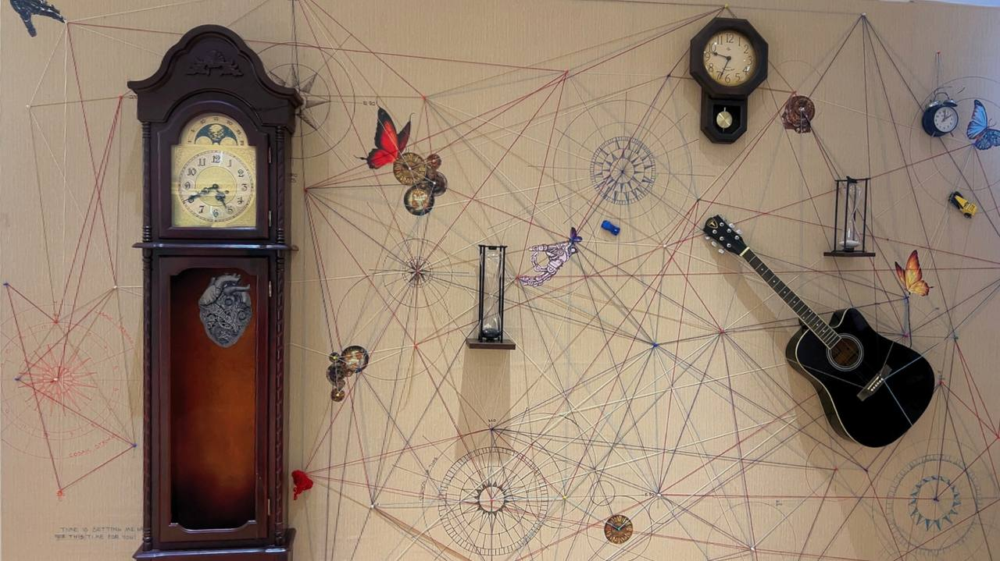

Garki, Abuja

Located at 3 kachi Close, Area 3, Garki, Abuja, the IICD Centre is a purpose-built creative facility designed to support the full spectrum of artistic activity — from intimate studio work to large-scale public exhibitions and events.
The space is home to our gallery, artist studios, workshop rooms, and a curated resource library. It is where residency artists live and work, where exhibitions open, where workshops run, and where Abuja's creative community comes together.
We welcome artists, curators, institutions, and members of the public. The space is available for hire for events, exhibitions, workshops, and private functions.
Enquire About the SpaceA dedicated white-cube gallery space hosting solo and group exhibitions throughout the year. The gallery has shown work by Nigerian and international artists, with a programme curated by IICD's team and invited curators. Adaptable for painting, sculpture, photography, installation, and mixed media.
Dedicated studio spaces used by our resident artists during the IICD residency programme. Studios are equipped for painting, sculpture, mixed media, and installation work. Residents have full access to studio facilities during their residency period.
A flexible multi-use space for workshops, artist talks, curatorial classes, screenings, and community events. Has hosted sessions facilitated by leading artists, curators, and academics from Nigeria and abroad, including portfolio reviews and curatorial training.
A curated collection of art books, exhibition catalogues, journals, and reference materials available to residents, associates, and visitors. A unique research resource for contemporary art practice in Abuja — described by programme participants as invaluable for curatorial development.
The full IICD Centre — including outdoor areas — is available as an event venue for cultural events, private views, receptions, launches, and institutional gatherings. Has hosted events for the US Embassy, Institut Français, and numerous Abuja cultural organisations.
IICD runs structured curatorial training for emerging curators and cultural managers, offering rigorous learning, mentorship, and real-world practice. "A one-of-a-kind space for any growing curator, providing the kind of rigorous learning, development, and kindness that are so important." — Aisha Aliyu-Bima, Institut Français Curatorial Laureate.
The IICD Centre is available for hire by artists, institutions, companies, and individuals. Whether you need a gallery for an exhibition, a room for a workshop, or a full venue for a private event, we can accommodate you.
We prioritise bookings that align with our mission of supporting creative development and cultural exchange in Abuja. We particularly encourage proposals from artists and curators who wish to exhibit at IICD.
Past hirers include embassy cultural departments, private collectors hosting viewings, and non-profit organisations running training programmes. Contact us to discuss your requirements and available dates.
Enquire Now"The IICD Centre is a one-of-a-kind space for any growing curator, providing the kind of rigorous learning, development, and kindness that are so important for a budding curator."— Aisha Aliyu-Bima, Institut Français Curatorial Laureate